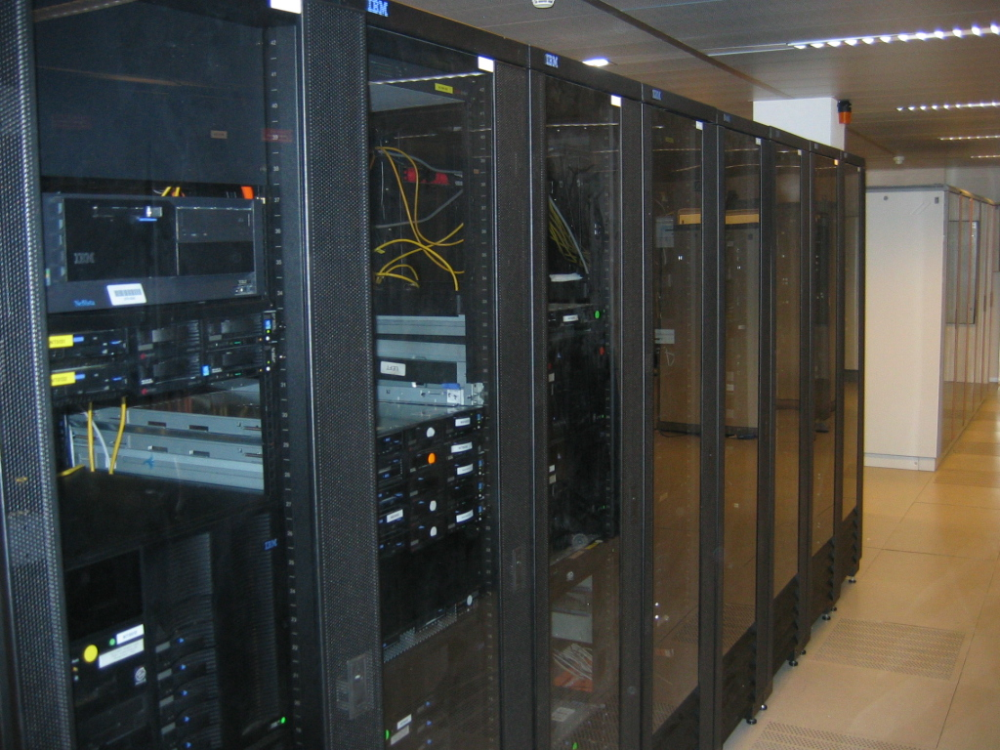
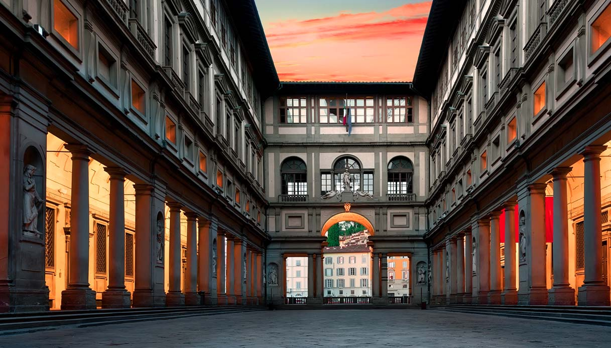

La pandemia ci ha abbondantemente mostrato la nostra inefficenza in termini di connessione.
Durante la D.A.D. non erano rari i problemi durante i vari collegamenti, tuttavia questa
misura prevede di installare ad 8,5 milioni di famigle ed a 9..000 edifici scolastici
una connessione ad 1 Gbps in rete fissa
Prevede il rafforzamento delle infrastrutture digitali della pubblica amministrazione,
la facilitazione alla migrazione al cloud, un ampliamento dell’offerta di servizi ai
cittadini in modalità digitale, la riforma dei processi di acquisto di servizi ICT.

Per il rilancio della cultura e del turismo, due settori chiave per l’Italia anche
per il loro significato identitario, una prima linea di azione riguarda interventi
di valorizzazione di siti storici e culturali, volti a migliorare la capacità,
attrattiva la sicurezza e l’accessibilità dei luoghi. Gli interventi sono
dedicati non solo ai cosiddetti “grandi attrattori”, ma anche alla tutela
e alla valorizzazione dei siti minori.

Si aggiungono misure per una riqualificazione ambientalmente sostenibile
delle strutture e dei servizi turistici, che fanno leva anche sulle nuove
tecnologie, e per l’eliminazione delle barriere architettoniche, senso-percettive,
culturali e cognitive nei musei, complessi monumentali, aree e parchi archeologici,
archivi e biblioteche statali.